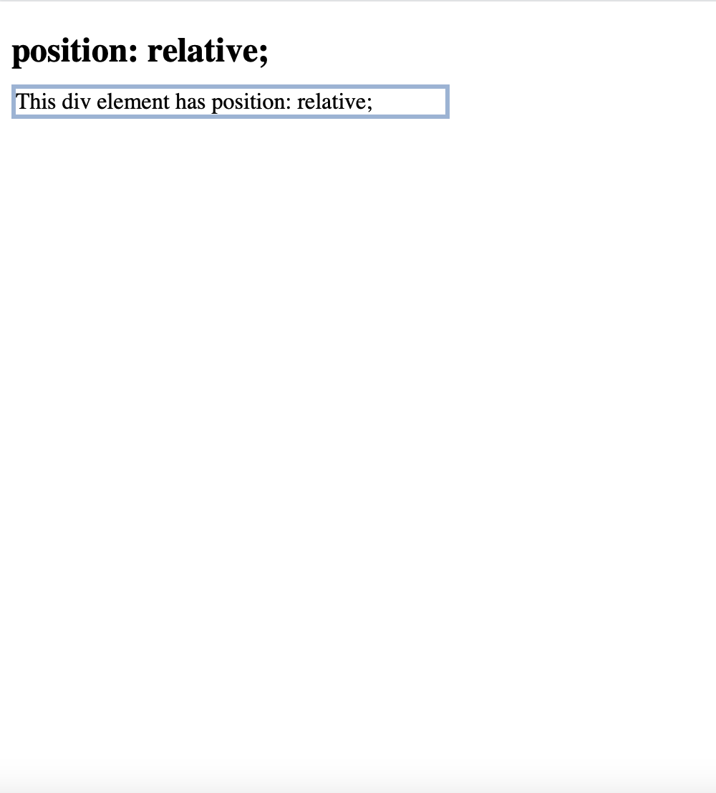
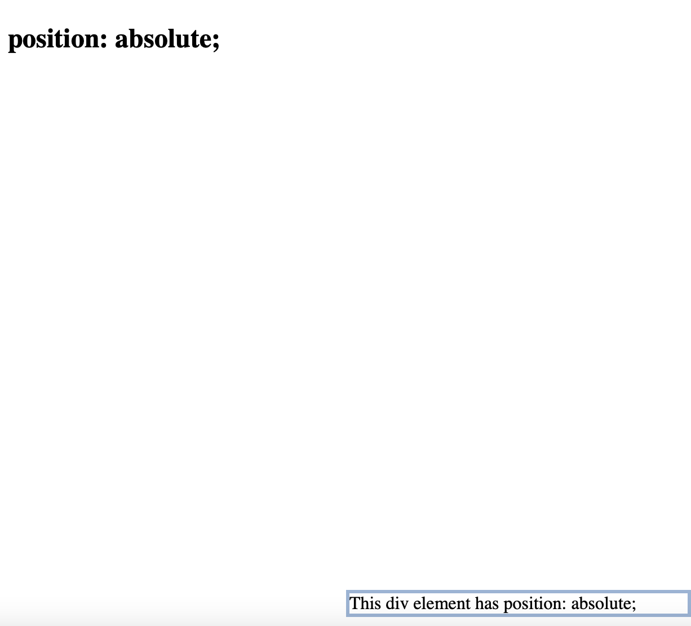
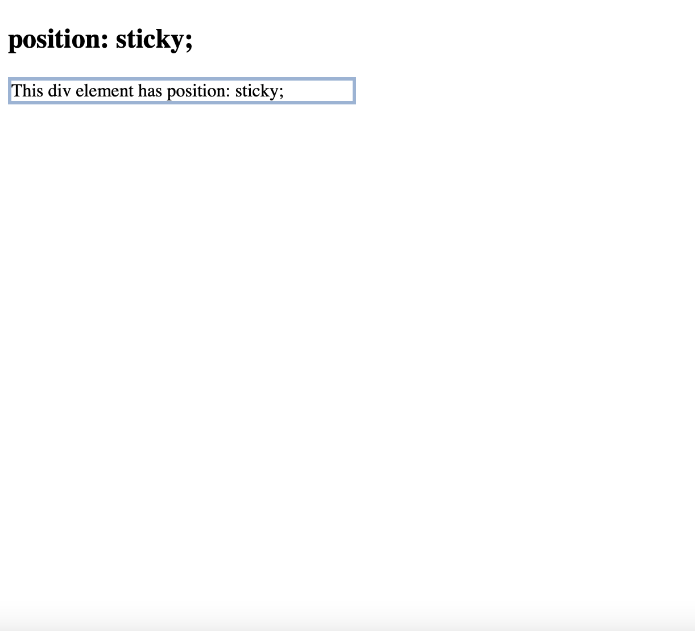

A tricky concept to undestand in CSS is the idea of positioning an element in relation to other elements on the page. This property 'position' is used to define the type of positioning used for a particular element. There are 5 options for this property shown below. In addition to setting the 'position' property, you can also set 'bottom', 'top', 'left', and 'right' which will only work in relation to the 'position' attribute. In this section, I will explain what each property option does as well as provide examples to make it easier to undestand as I know I am still trying to grasp this concept too.
.example {
position: static | fixed | relative | absolute | sticky;
}
An element is positioned to static by default so there is no need to specify if unless you want to add 'bottom', 'top', 'left' and 'right' attributes to the element. An element with a static position will flow the normal flow of the page.
example.static {
position: static;
border: 3px solid rgb(151, 179, 214);
}
<body>
<div class = "static">
This div element has position: static;
</div>
</body>

An element with a fixed postion is anchored to the viewport and doesn't move when scrolling throught a page. It is important to use the 'top', 'bottom', 'left', and 'right' properties to position the element in the correct spot on the viewport. Another important thing to consider with a fixed position element is that the element won't take up space in the flow. It almost resides on top of everything else which can be good for things such as navigation bars.
example.fixed {
position: fixed;
border: 3px solid rgb(151, 179, 214);
}
<body>
<div class = "fixed">
This div element has position: fixed;
</div>
</body>

An element with relative positioning is offset compared to where it would be placed in normal flow. That is, the only way to change the positioning when its relative is by setting the 'bottom', 'top', 'left', and 'right' attributes. Other content's positioning will not be impacted so this positioning option can cause excessive white space if not used in the correct way.
example.relative {
position: relative;
border: 3px solid rgb(151, 179, 214);
}
<body>
<div class = "relative">
This div element has position: relative;
</div>
</body>

Absolute positioning suggests that an element is positioned relative to the nearest positioned ancestor. These elements are not a part of the normal flow of the page and can overlap with elements that are apart of the normal page flow.
example.absolute {
position: absolute;
border: 3px solid rgb(151, 179, 214);
}
<body>
<div class = "absolute">
This div element has position: absolute;
</div>
</body>

Sticky positioning means that an element is positioned in relation to the user's scrolling position. This typically means that it toggles between fixed and relative based on the scroll positioning. The element basically sticks in place while you move through the page.
example.sticky {
position: sticky;
border: 3px solid rgb(151, 179, 214);
}
<body>
<div class = "sticky">
This div element has position: sticky;
</div>
</body>
